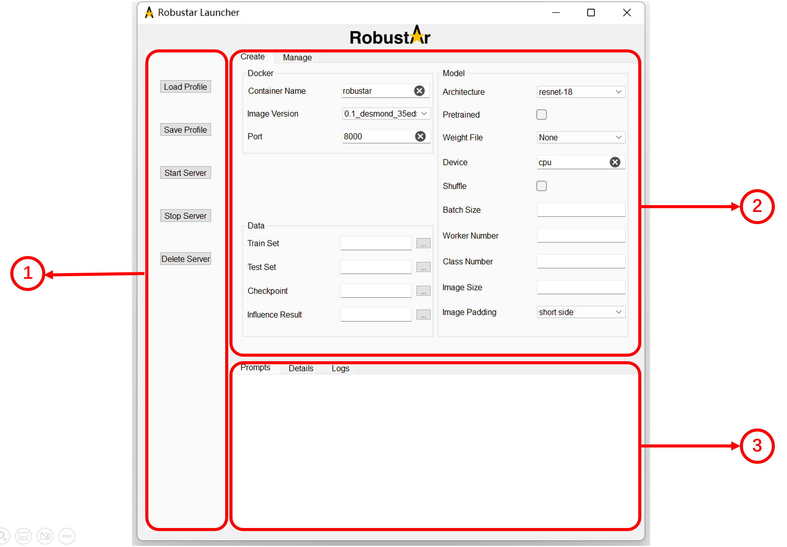
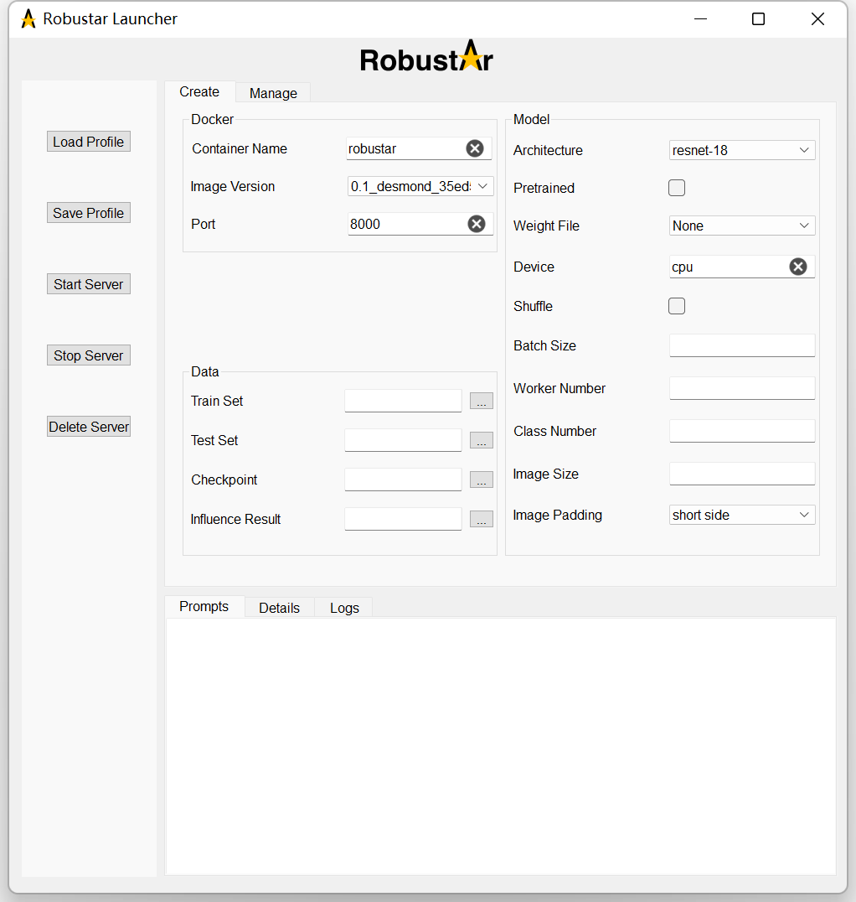
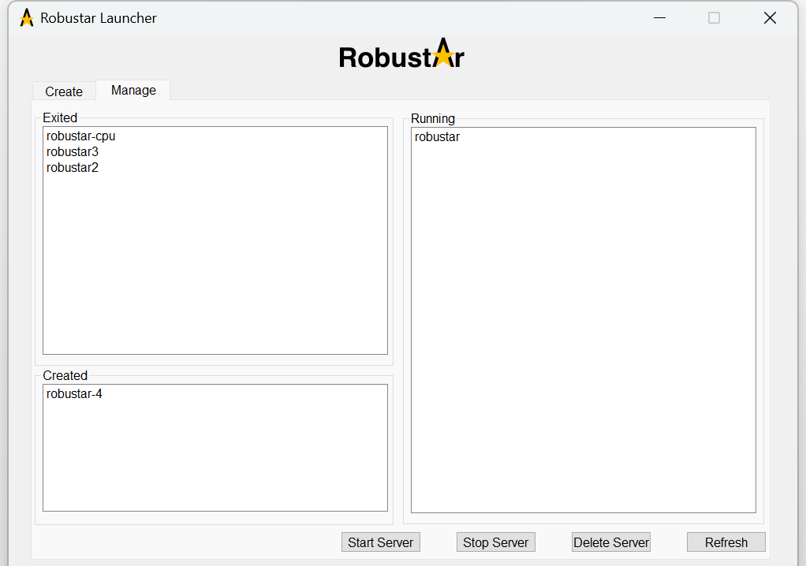
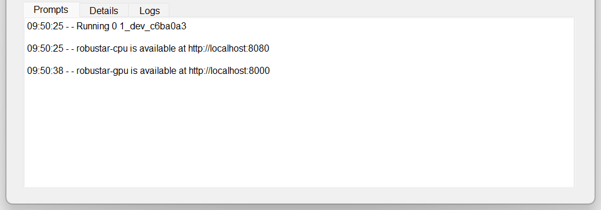
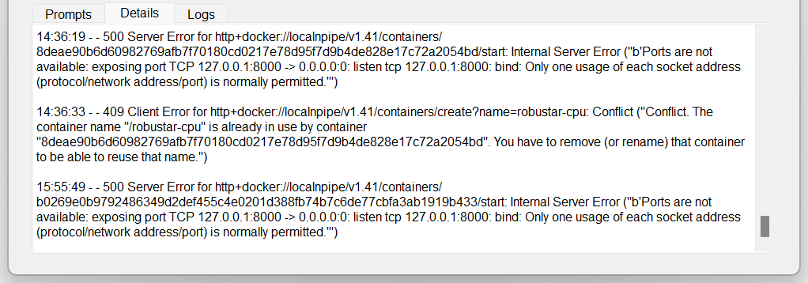
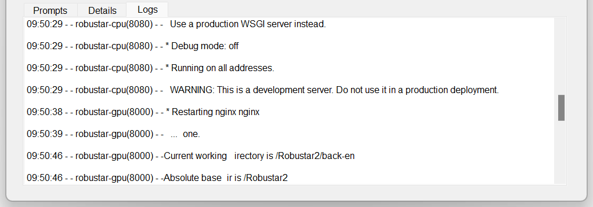
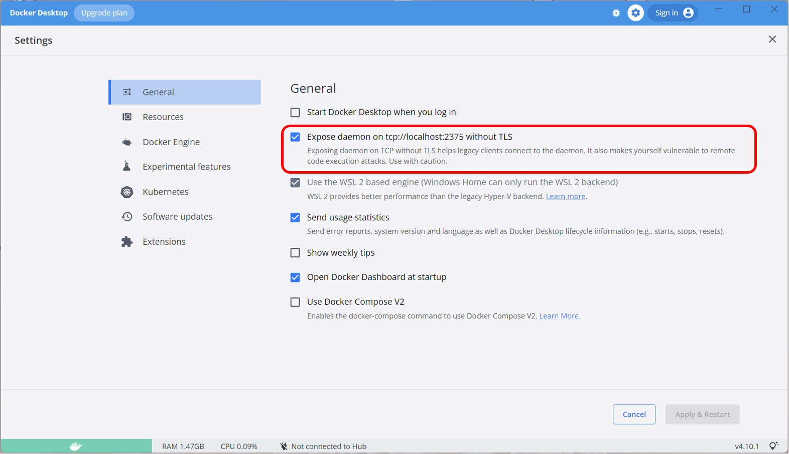

Introduction
Robustar Launcher is an interactive application that enables you to control Docker containers for Robustar. You can download and run the executable file from here or use the provided code to launch the application.
At present, our software only supports the Windows operating system. However, we are planning to expand our support to include other operating systems such as Linux and Mac in the near future. With Robustar Launcher, you can easily manage and control your Docker containers, making it a powerful tool for your machine learning workflow.
Contents
1. Overview of Robustar Launcher
Robustar Launcher is shown below.

The figure above consists of two major parts: the upper part (denoted by a) is for operations and the lower part (denoted by b) is for displaying information.
Part a contains two tab pages:
- The Create tab page, which is used for creating a new server (i.e., container).
- The Manage tab page, which is used for managing existing servers.
Part b contains three tab pages:
-
The Prompts tab page, which displays essential prompts.
-
The Details tab page, which displays more detailed information such as detailed errors and Docker image download progress.
-
The Logs tab page, which displays the complete container logs.
2. Start Robustar Launcher
To start Robustar Launcher, you can either run the executable file or the source code. If you want to run the source code, make sure that you have the prerequisites satisfied. See here for more information.
If you start using the executable file:
-
For Windows: Just double click the software.
-
For Linux: right-click the software and select "Run." Otherwise, you will need to execute
sudo ./"Robustar Launcher"in the terminal.
(NOTE: Please replace ./"Robustar Launcher" with the appropriate path to the software on your machine.)
If you start using the source code, first make you sure you are in the launcher/ directory:
-
For Windows: run
python app.pyin the terminal. -
For Linux: If your account has permission to directly fetch the Docker server API version, you can run
python app.pyin the terminal. Otherwise, you will need to elevate your privileges by runningsudo -ifirst and then executepython app.py.
3. Use Robustar Launcher
Here is an outline of the various functions of Robustar Launcher:
Detailed instructions of these functions will be provided in turn below.
3.a. Create a new container

To create a new container, follow these steps:
- Navigate to the Create tab page.
- Complete all the required input fields.
- Click on the Create Server button.
- Monitor the status update on the Prompts tab page to confirm if the creation process was successful.
Here are specific instructions for completing each input field:
- Container Name: Enter a name for the container. Avoid using the same name as an existing container.
- Image Version: Select the version of the Docker image to be used for the container.
- Port: Enter the port number where the software's webpage will be hosted and can be accessed for interaction.
- Train/Validation/Test/Paired Set: Select the root path of the train/validation/test/paired dataset.
- Checkpoint: Select the root path where the model checkpoint files will be stored. Files with the .pth or .pt extension in this path will be provided as options in the Weight File field. The checkpoint files generated during the training process will also be stored here.
- Influence Result: Select the root path where the influence calculation results will be stored.
- Output Folder: Select the root path where other generated files, such as the database file, will be stored.
- Architecture: Select the architecture of the model you want to create.
- Pretrained: Choose whether to use the pretrained weight (provided by torchvision) of the model.
- Weight File: Select the checkpoint file to be used for initializing the weights of the model. Available options are the files with the .pth or .pt extension in the path set in the Checkpoint field. If you don't want to use a checkpoint file for initialization, select None. If you choose Pretrained and select a checkpoint file simultaneously, the model will adhere to the weights in the checkpoint file.
- Device: Select the device to run the container.
- Shuffle: Choose whether to shuffle the train set.
- Batch Size: Enter the batch size for the train, test, and validation data loader.
- Worker Number: Enter the number of workers for the data loader.
- Class Number: Enter the number of classes of the dataset.
- Image Size: Enter the length of the sides of the transformed square image to be inputted into the model.
- Image Padding: Choose the mode to be used for padding the image as a square.
To save time configuring a new container in the future, you can save the current configuration as a JSON file by clicking on the Save Profile button. This saves the current configuration profile for future use.
The next time you want to use the same configuration, simply click on the Load Profile button and select the appropriate JSON file. This will load the saved configuration into the launcher, allowing you to quickly create a new container with the same settings.
3.b. Manage present containers

To mange present containers, follow these steps:
- Navigate to the Manage tab page.
- Select the container to be operated on from the lists of present containers.
- Click on the Start Server/Stop Server/Delete Server button.
- Monitor the status update on the Prompts tab page to confirm if the operation was successful.
Present containers are categorized into three categories, according to their status:
- Running: Containers that are currently running.
- Exited: Containers that have exited from the Running state.
- Created: Containers that were created but never had the chance to run.
The Launcher now passively updates the status of the containers. When an operation is conducted successfully, or when you switch from the Create tab page to the Manage tab page, the Launcher will update the status of the containers. However, if you remain on the Manage tab page and the status of a container changes due to reasons other than an operation, the update of its status will not be displayed.
In such a case, you can manually force a status update by clicking on the Refresh button. This will display the most up-to-date status information for all present containers.
3.c. Check Launcher outputs
There are three tab pages in the Launcher where you can view the output at different levels: the Prompts tab page, the Details tab page, and the Logs tab page.
In the Prompts tab page, you can view the most essential information, such as whether an operation has been carried out successfully. This tab page provides a summary of the most important information related to the current operation.

In the Details tab page, you can view more detailed information about the current operation, including detailed errors and progress updates for Docker image downloads. This tab page provides a more comprehensive view of the operation, allowing you to troubleshoot issues and monitor progress in more detail.

In the Logs tab page, you can view the real-time logs of the containers. Because multiple containers may be running at the same time, an identifier of the format name(port) is inserted after the time stamp for each log.
Currently, the Launcher only automatically displays the logs of containers that were started during the current session. Logs for containers started before launching the Launcher will not be displayed automatically. However, if you start a new container, the logs of both the newly created container and any previously started containers that are running will be displayed in real-time.

4. Appendix
4.a. Prerequisites to run Robustar Launcher
To run Robustar Launcher, you must have Docker Engine installed and running on your computer. This applies to both the executable file and the code.
If you're using Windows, ensure that you've exposed the daemon on tcp://localhost:2375 without TLS. Shown below is how you can enable this using Docker Desktop:

If you want to run the Launcher from the source code, you'll need to install the necessary Python packages. To do this, navigate to the launcher/ directory and run pip install -r requirements.txt in the command prompt.